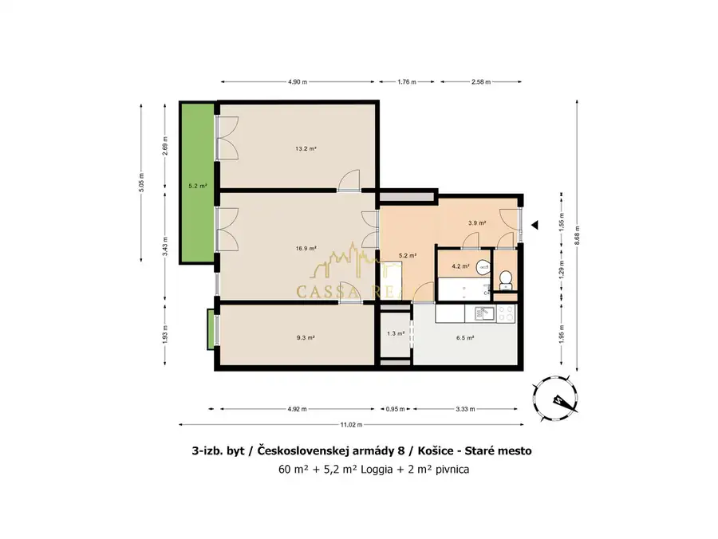
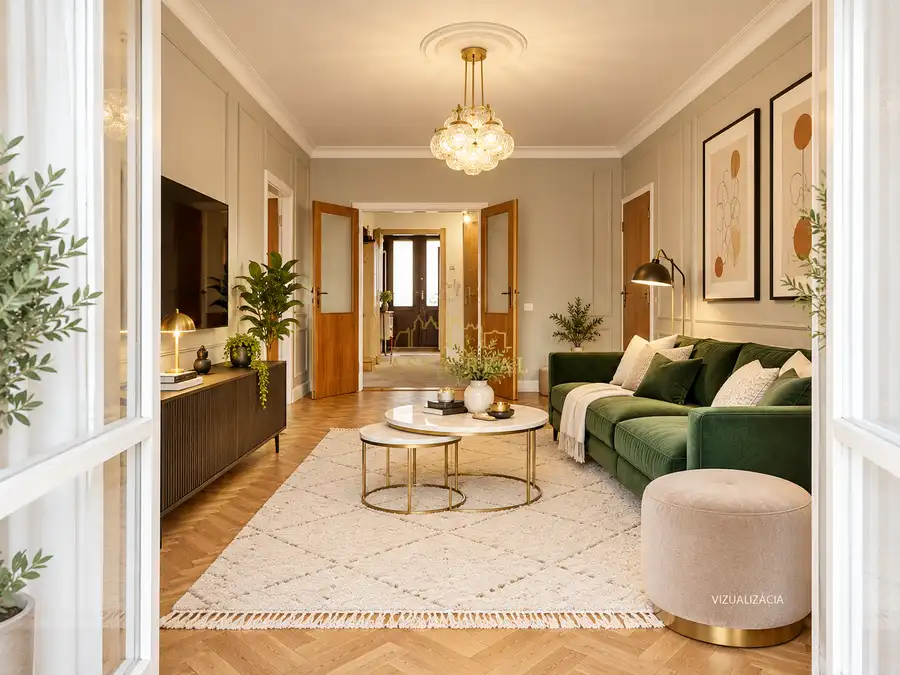
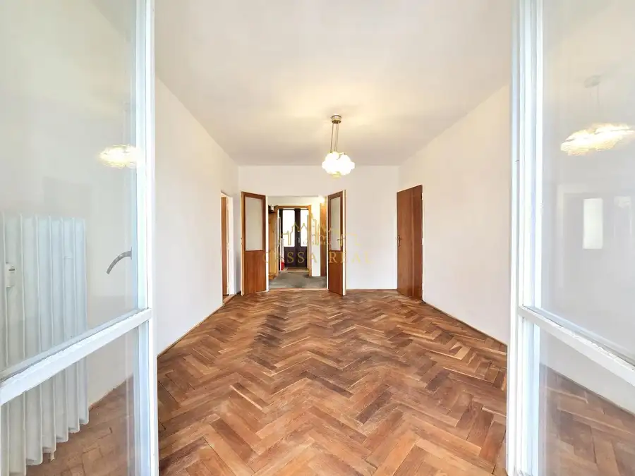
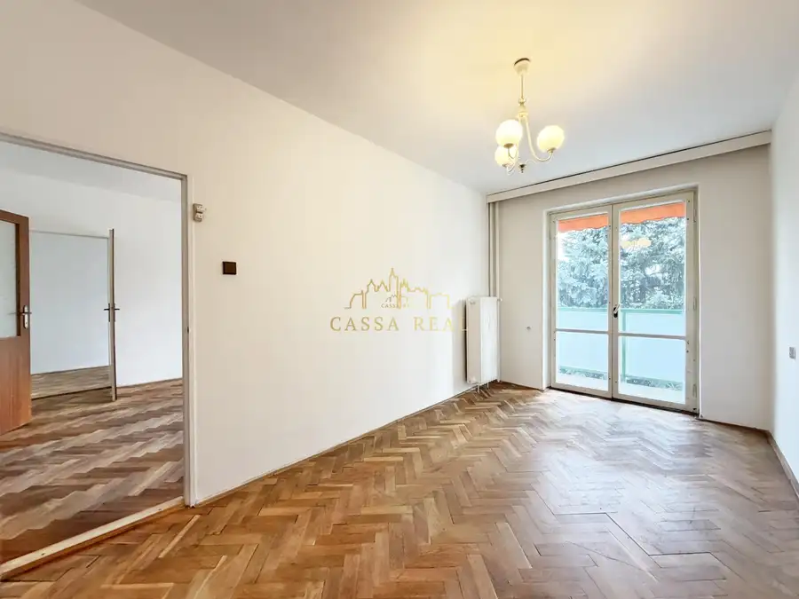
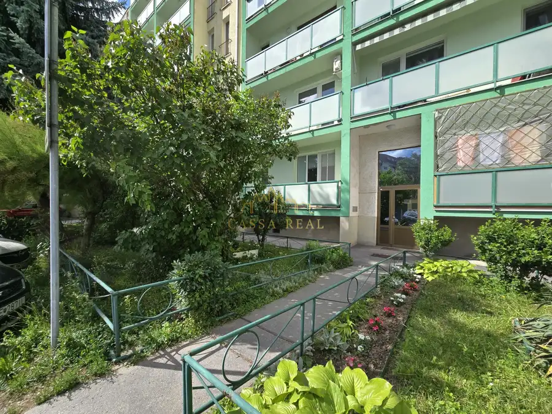
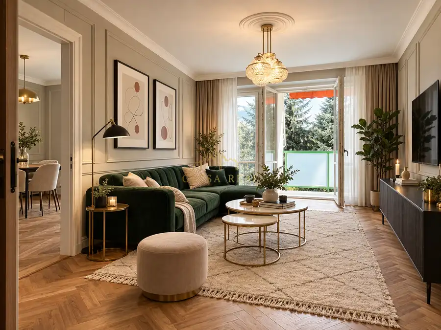
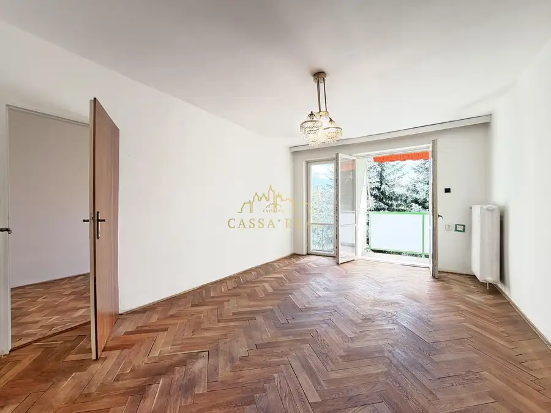

TEHLOVÝ 3-izb. byt 67 m² s veľkou loggiou do dvora / ul. ČSA / Staré mesto - Centrum
Staré Mesto, Košice








- Dispozícia3-izbový
- Plocha62 m²
- Poschodie2. z 7
- StavPôvodný stav
- VlastníctvoOsobné
O nehnuteľnosti
Polohovo výborne situovaný 3 izbový byt, s veľmi peknou orientáciou do tichého dvora a 2x dvoj-krídlovými výstupmi na veľkú loggiu, je ideálny pre toho kto chce bývať priamo V CENTRE Košíc a mať všade na skok. Byt ponúka jedinečnú dispozíciu (aká je len v tomto dome), je vhodný na bývanie aj prenájom a je pripravený na okamžitú rekonštrukciu.3-izb. byt sa nachádza na 2. poschodí / zo 7. / v tehlovom bytovom dome s výťahom, na ul. Československej armády č. 8, oproti staromestskej radnici a športovej hale – na hranici historickej časti Starého mesta a Kuzmányho sídliskaDispozícia bytu ponúka k užívaniu spolu: 67 m² / z čoho čistú podlahovú plochu bytu tvorí: 60 m² + 5 m2 dlhá loggia + 2 m² veľká pivnica.Tehlový byt umožňuje posúvať nenosné stredové priečky (steny medzi izbami), čo umožňuje ďalšie voľné zmeny jeho dispozície.Byt je v pôvodnom stave s parketami a pôvodnými drevenými oknami a je pripravený na okamžité začatie prác. Disponuje ľahko demontovateľným umakartovým bytovým jadrom s vaňou a samostatným WC. Kuchynská linka je demontovaná s ohľadom na plánovanú rekonštrukciu.Dispozícia bytu ponúka:– väčšiu obývaciu izbu (17 m²) s východom na loggiu – orientovanú do dvora– spálňu (13 m²) s východom na loggiu – orientovanú do dvora– detskú izbu (9 m²)– samostatnú kuchyňu– kúpeľňu s vaňou + miestom pre práčku + samostatné oddelené WCBytový dom je tehlový s atypickým prístupom do bytov cez pavlače a disponuje moderným výťahom.– Orientácia izieb bytu: Juh + kuchyňa: na sever– Mesačné náklady na bývanie, vrátane FO a energií: 250 €– Byt je v osobnom vlastníctve a bez tiarch = Kúpou ihneď voľný! Perfektná občianska vybavenosť je v centre mesta samozrejmosťou (MHD, obch. centrá (Tip-top, Urban), obľúbené kaviarne (Nico café), MŠ, ZŠ, gymnáziá, univerzity (TUKE, UPJŠ), pošta, tržnica, zdrav. stredisko) všetko je na skok. Oproti sa nachádza miestny úrad a radnica MČ Staré mesto, ako aj stará športová hala s množstvom spoločenských podujatí.Hlavná ulica s pešou zónou je vzdialená necelých 400 m / 4 min. peši.Parkovanie je možné vo vlastnom dvore na rezidentskú kartu v cene 20 Eur / rok.Výhody bytu:———————– 3 izby– 2x dvojkrídlový východ na loggiu + fr. balkón– parkety v izbách– skvelá poloha V CENTRE + orientácia do dvora– bytový dom s výťahom– pohodlné 2. poschodie– dobrá dostupnosť autom aj MHD——————–————–————–—CENA: 225.000,-€————————–—————–———Cena je už vrátane kompletného servisu spojeného s profesionálnym a pohodlným prevodom nehnuteľnosti do Vašich rúk. S hypotékou či dobrým úverom Vám radi poradíme.Viac INFO Vám rád poskytne:Andrej Ďurica / Senior Realitný Maklér - CASSAREAL0911078864durica@cassareal.sk—————————————————————-= CassaReal / Nájdeme Vám domov =-—————————————————————
Parametre
- Cellar area
- 2 m²
- Cena vrátane energií
- Nie
- Druh
- 3 izbový byt
- Dátum zverejnenia
- 27. 09. 2026
- Energetický certifikát budovy
- nie je
- Energie
- 250
- Orientácia
- Juhozápadná
- Plocha balkónu v m2
- 5 m²
- Podlažie
- 2
- Počet balkónov
- 1
- Počet izieb / miestností
- 3
- Počet nadzemných podlaží
- 7
- Počet pivníc
- 1
- Prechodová izba
- Áno
- Stav nehnuteľnosti
- Pôvodný stav
- Telekomunikácie
- Telefón, Internet
- Typ
- Predaj
- Umiestnenie
- Ďalšie nadzemné podlažie
- Vlastníctvo
- Osobné
- Vybavenie
- Balkón, Terasa, Pivnica, Špajza, Výťah
- Vykurovanie
- Ústredné
- Zariadenie
- Nezariadené
- Úžitková plocha
- 62 m²
Kde to je


Mohlo by Vás zaujímať
 BytNové
329 000 €KRÁSNY nadštandardný 2-izb. byt 54 m² + 12 m² Terasa / NOVÁ TERASA / Súľovská ul.
Západ, Košice
2-izbový54 m²2. podlažie
BytNové
329 000 €KRÁSNY nadštandardný 2-izb. byt 54 m² + 12 m² Terasa / NOVÁ TERASA / Súľovská ul.
Západ, Košice
2-izbový54 m²2. podlažie
 DomNové
460 000 €NOVÝ 4-izb. RODINNÝ DOM pod lesom / 132 m² + ZÁHRADA / Myslava – Pod Hrabinou
Myslava, Košice
132 m²
DomNové
460 000 €NOVÝ 4-izb. RODINNÝ DOM pod lesom / 132 m² + ZÁHRADA / Myslava – Pod Hrabinou
Myslava, Košice
132 m²
 BytNové
299 900 €Moderný 3-izb. TEHLOVÝ byt 67 m² + 7 m² balkón + klíma + parking | PANORÁMA – Košice
Vyšné Opátske, Košice
3-izbový67 m²1. podlažie
BytNové
299 900 €Moderný 3-izb. TEHLOVÝ byt 67 m² + 7 m² balkón + klíma + parking | PANORÁMA – Košice
Vyšné Opátske, Košice
3-izbový67 m²1. podlažie